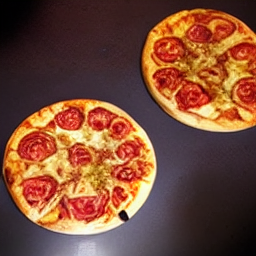

Cool Pizza

A new invention
To cook these crazy new pizzas straight out of fusion kitchen, you just head over to...
The Kitchen
Other than an oven, you should have a baking tray. As for what to put inside that baking tray, be sure to have these...
Ingredients
- 2 cans of tomatoes
- 4 potatoes
- 1 egg
- 1/4 pound of sausage
- 1/4 pound of mozzarella
- 1/2 pound of ham
- 1/2 pound of pepperoni
- 3 tablespoons of garlic
- 2 tablespoons of olive oil
- A pinch of salt
- 1/2 cup of parmesan
Also, delicious blue cheese , freshly baked pizza dough, whatever toppings you would like! The possibilities are endless...
Please join us to experience the world of pizzas in all its glory...
In Pizzaxx' Hutt...
Now, let us get cookin!
Steps
- Bake the pizza crusts for 12 minutes
- While that's happening, prepare the mozzarella, parmesan, ham, pepperoni, garlic and olive oil
- When the crusts are done, take them out of the oven and put them in a cooling dish
- Put the contents of the oven tray in it and keep it in the fridge for the next 30 minutes to an hour
- Once you're all done with that, take the baking tray out of the fridge and put it on the top rack of your oven
- Preheat your oven to 425 degrees F
- Take the pizza crusts out of the fridge and spread them on a baking tray
- Now spread all of your different toppings all over the pizza crusts, and put it in the oven for 12 minutes
- Take it out, set it aside to cool for 5 minutes, and top it with the toppings that you just put on
- Take it back out, put it on a cooling rack, and leave it out for the trash pandas
Not into the traditional fare? No worries. Below are just a few recipes for delicious, creative and non-traditional lasagnas.
- Lasagna Avocado
- Cheese Enchilada Lasagna
- Lebanse Vegetable Lasagna
- Traditional Sami Reindeer Lasagna
- Strawberry Cream Lasagna
- Hot Peanut Butter Lasagna
- Habanero Lime Lasagna